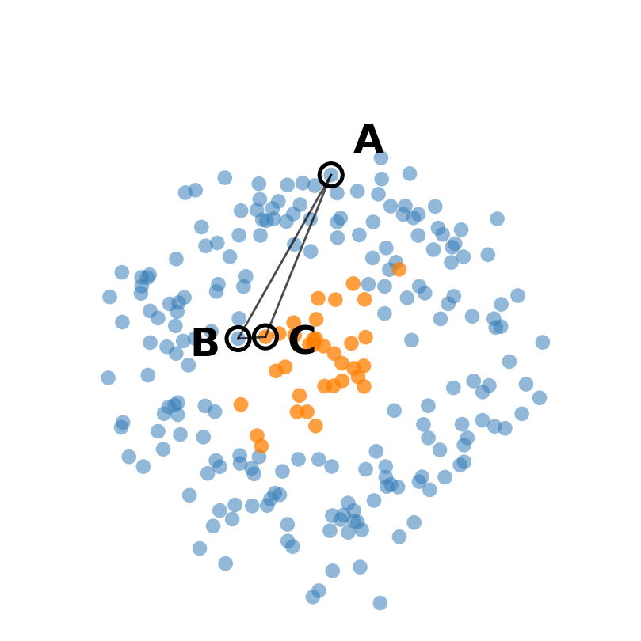
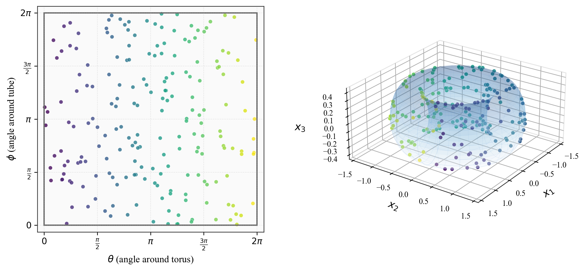
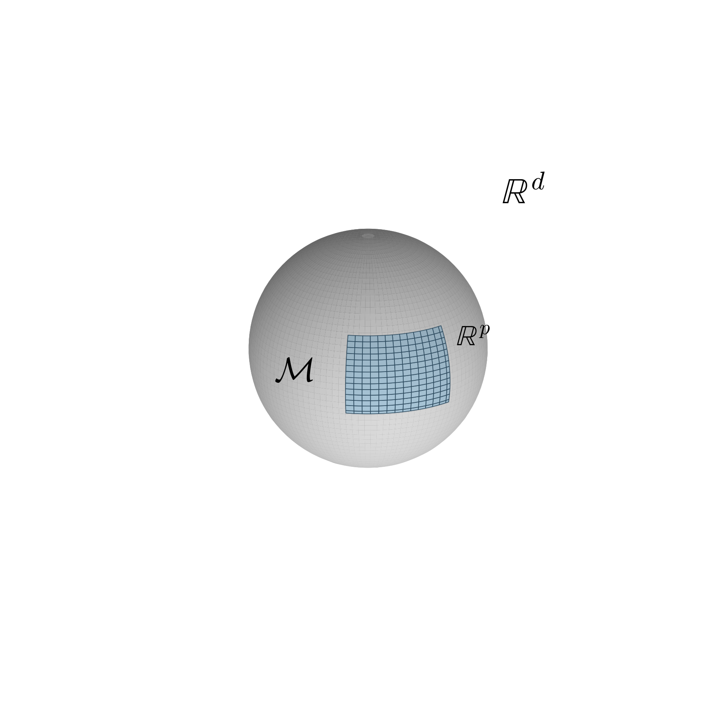
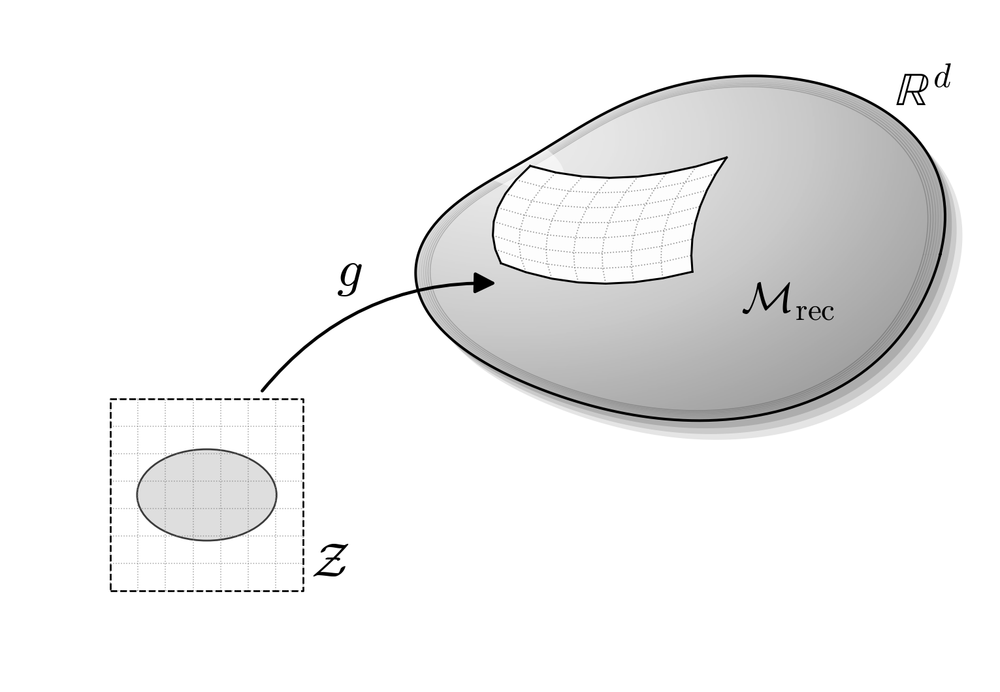

Extended technical background
Autoencoder manifold geometry
This page supports the decoder-distance analysis reported in the thesis. It explains the manifold hypothesis, the geometric roles of the encoder and decoder, the Riemannian pullback metric and the sampled geodesic calculation. The thesis retains the method, empirical results and conclusions; this page contains the extended derivation and pseudocode.
Why latent distance needs checking
An autoencoder contains an encoder f that maps an input to a lower-dimensional code and a decoder g that reconstructs the input from the code. A common downstream workflow treats the codes as ordinary feature vectors and applies clustering with Euclidean distance. This workflow assumes that distances between codes reflect differences between the corresponding reconstructed inputs.
Reconstruction loss does not directly impose that constraint. Similar inputs are not guaranteed to receive nearby codes, and nearby codes are not guaranteed to decode to similar outputs. The decoder can stretch one part of the code space and compress another, so equal Euclidean steps can represent different amounts of input-space change.

Manifold hypothesis
The manifold hypothesis states that high-dimensional observations concentrate near a lower-dimensional surface embedded within the input space. The intrinsic dimension is the number of coordinates required to describe a point on that surface. The ambient dimension is the dimension of the surrounding space.
A torus provides a simple example. Two coordinates describe every point on its surface, giving an intrinsic dimension of two, although the surface is embedded in an ambient three-dimensional space.

For observations X in a d-dimensional input space, the hypothesis can be written as follows:
The data manifold M has intrinsic dimension p, while the surrounding input space has ambient dimension d, with p smaller than d.

Geometric role of the autoencoder
From the geometric perspective, the decoder is the central object. As the code z ranges across the code space Z, the decoder outputs trace a reconstructed surface in the input space. This surface is denoted Mrec. The encoder assigns coordinates to observations on or near that surface.
The code space is therefore a coordinate system for the reconstructed manifold rather than a subset of the manifold. Each code is an address that the decoder maps to a reconstructed input. Training seeks a reconstructed surface that approximates the structure occupied by the observations, but reconstruction accuracy does not guarantee distance preservation in the chosen coordinates.

Decoder Jacobian and pullback metric
The decoder Jacobian describes the local response of the reconstructed output to a small change in each latent coordinate. For a decoder from a p-dimensional code space to a d-dimensional input space, the Jacobian at code z is
Each column gives the input-space direction produced by a small displacement along one latent axis. The pullback metric combines these directions into a local measure of decoder distortion:
For a small latent displacement, the quadratic form below approximates the corresponding squared change in the decoded input:
A large value means that the decoder turns a small latent step into a large reconstructed change. A small value means that the same latent step produces little reconstructed change. Variation in the metric across the code space therefore describes local stretching and compression by the decoder.
Curvature and coordinate distortion
Intrinsic curvature and coordinate distortion are related but not equivalent. A sheet rolled into a Swiss roll looks curved in its ambient space but remains intrinsically flat because it can be unrolled without stretching. A sphere is intrinsically curved because it cannot be flattened without changing distances.
Low intrinsic curvature alone does not guarantee that Euclidean code distances preserve distances on the reconstructed manifold. Even a flat surface can be described by coordinates that stretch one region and compress another. Euclidean distance is a useful proxy only when decoder distortion is sufficiently limited and approximately uniform over the part of the embedding being analysed. The agreement must therefore be tested for the fitted model.
Decoded paths and geodesics
A simple decoder-induced path places equally spaced points on the straight line between two latent codes, decodes every point and sums the Euclidean distances between consecutive decoded outputs. This procedure measures the length of the decoded straight path, not necessarily the shortest path on the reconstructed manifold.
For a continuous latent curve γ, the Riemannian length equals the arc length of the decoded curve:
The geodesic is the path with the smallest length under this metric. In distorted latent coordinates the geodesic is not necessarily a straight line. The deterministic metric measures decoder sensitivity rather than predictive uncertainty.
Discrete geodesic procedure
- Place T path points on a linear interpolation between the two fixed latent endpoints.
- Treat the interior path points as optimisation variables while keeping the endpoints fixed.
- Decode every path point using the trained decoder.
- Calculate the sum of squared distances between consecutive decoded outputs.
- Backpropagate through the decoder and update the interior path points.
- Repeat until the relative change in path energy is below the convergence tolerance or the iteration limit is reached.
The discrete decoded-path energy is
Use in the thesis
The thesis did not construct a complete Riemannian distance matrix or recluster the full dataset under that metric. The 9,364 distinct training embeddings produced more than 43 million unique pairs, making iterative geodesic optimisation for every pair infeasible.
The main diagnostic therefore used edges from a nearest-neighbour graph. For every edge, the straight interpolation between the two original codes was divided into ten segments. All 11 latent points were decoded, each reconstructed output was flattened across the six channels and all time steps, and the ten consecutive decoded distances were summed. The resulting path length was correlated with Euclidean distance in the standardised embedding.
Optimised geodesics were also evaluated for 1,200 sampled pairs spanning the Euclidean distance range. Each path began as a linear interpolation and its interior points were updated to minimise the decoded path energy. The sampled calculation checked whether the conclusion from the less expensive straight-path approximation remained valid when the path itself was optimised.
Pairwise Riemannian distances can be used directly by methods that accept arbitrary dissimilarities, including hierarchical clustering and graph-based analyses. Standard K-means requires coordinates and cannot accept an arbitrary distance matrix without a separate Riemannian formulation.
Sources
- Arvanitidis, G., Hansen, L. K. and Hauberg, S. (2018). Latent space oddity: On the curvature of deep generative models . Proceedings of the 6th International Conference on Learning Representations.
- Bengio, Y., Courville, A. and Vincent, P. (2013). Representation learning: A review and new perspectives . IEEE Transactions on Pattern Analysis and Machine Intelligence, 35(8), 1798–1828.
- Shao, H., Kumar, A. and Fletcher, P. T. (2018). The Riemannian geometry of deep generative models . Proceedings of the IEEE Conference on Computer Vision and Pattern Recognition Workshops, 315–323.